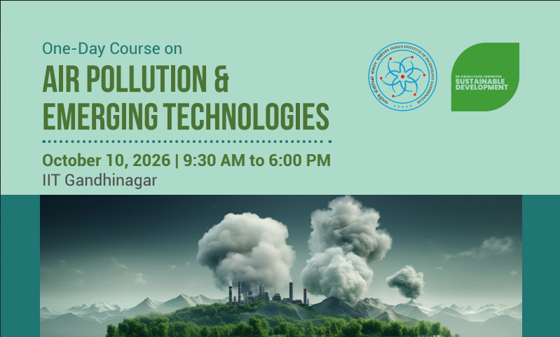
One-Day Course on Air Pollution & Emerging Technologies
Organized by IIT Gandhinagar.
Organizing academic symposia, presenting research, and actively engaging with the scientific community across environmental science and air quality.

Organized by IIT Gandhinagar.
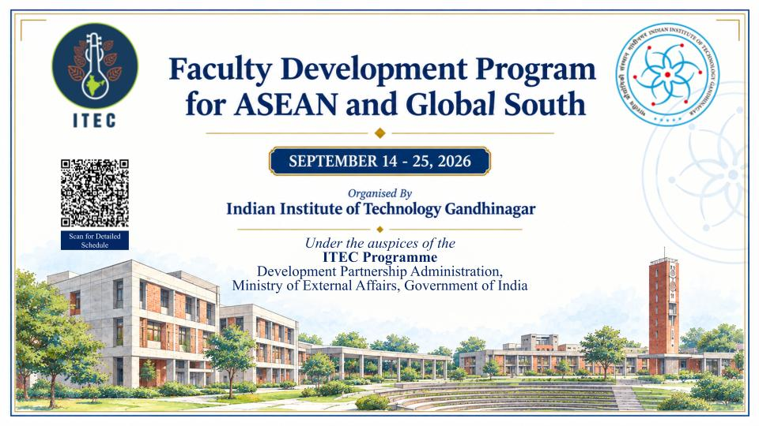
Organized by IIT Gandhinagar.
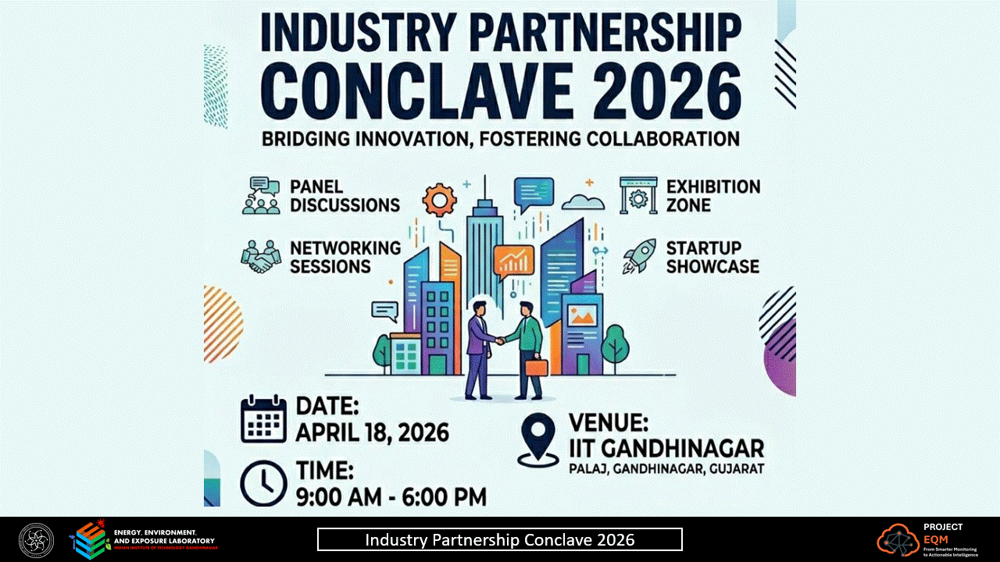
Organized by IIT Gandhinagar.
Vats, P., Nagar, C., Sen, S., and Patel, S. (2026) “Low-Cost Environmental Quality Monitoring System for High-Resolution Spatiotemporal Urban Air Quality Monitoring and Multi-Scale Forecasting”, Industry Partnership Conclave 2026, India.
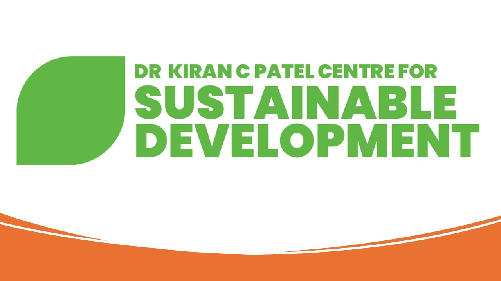
Organized by Kiran C. Patel Centre for Sustainable Development, IIT Gandhinagar, India.
Vats, P., Nagar, C., Sen, S., and Patel, S. (2026) “Environmental Quality Monitoring System Using Low-Cost Sensors for Urban Air Quality Monitoring and Multi-Scale Forecasting”, KPCSD Poster Competition on Sustainability, IIT Gandhinagar, India.
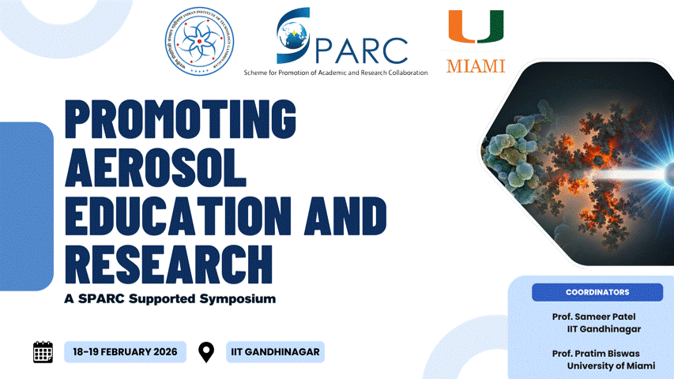
Organized by IIT Gandhinagar.

Organized by IIT Gandhinagar.
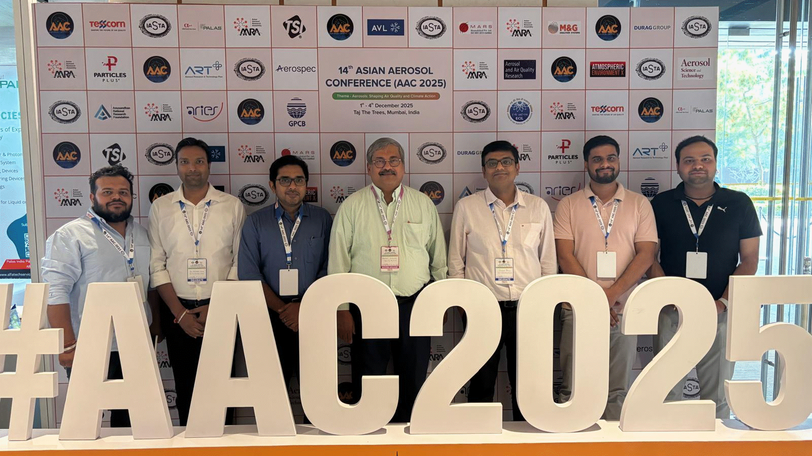
Organized by IASTA, Mumbai.
Vats, P., Thakur, A.K., and Patel, S. (2025) “Development and Deployment of a Low-Cost IoT Based Environmental Quality Monitoring System (EQMS) with Spatio-Temporal Predictive Modeling”, 14th Asian Aerosol Conference 2025, Mumbai, India.
Singh, A.P., Vats, P., and Jain, M.K. (2025) “ML Model Evaluation for AQI Prediction in IGP Using Air Quality and Meteorological Features”, 14th Asian Aerosol Conference 2025, Mumbai, India.
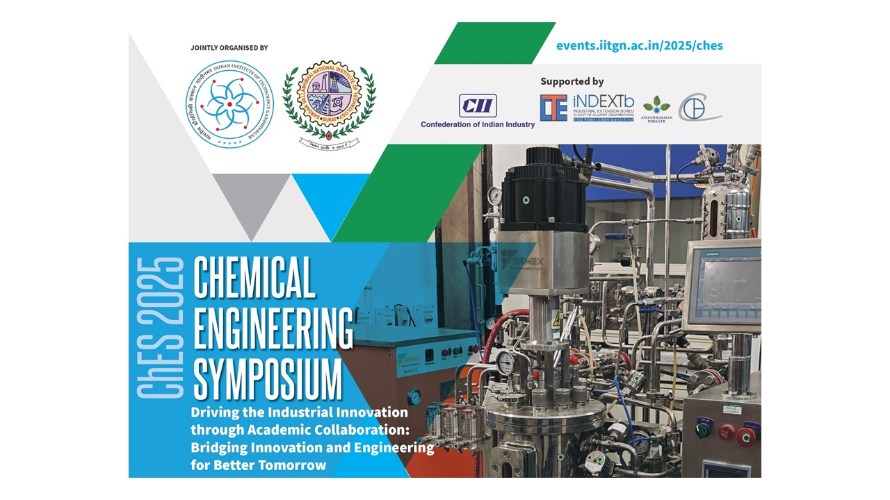
Organized jointly by IIT Gandhinagar and SVNIT, India.
Vats, P., and Patel, S. (2025) “Environmental Quality Monitoring System Using Low-Cost Sensors for Urban Air Quality Monitoring and Multi-Scale Forecasting”, Chemical Engineering Symposium, IIT Gandhinagar and SVNIT, India.
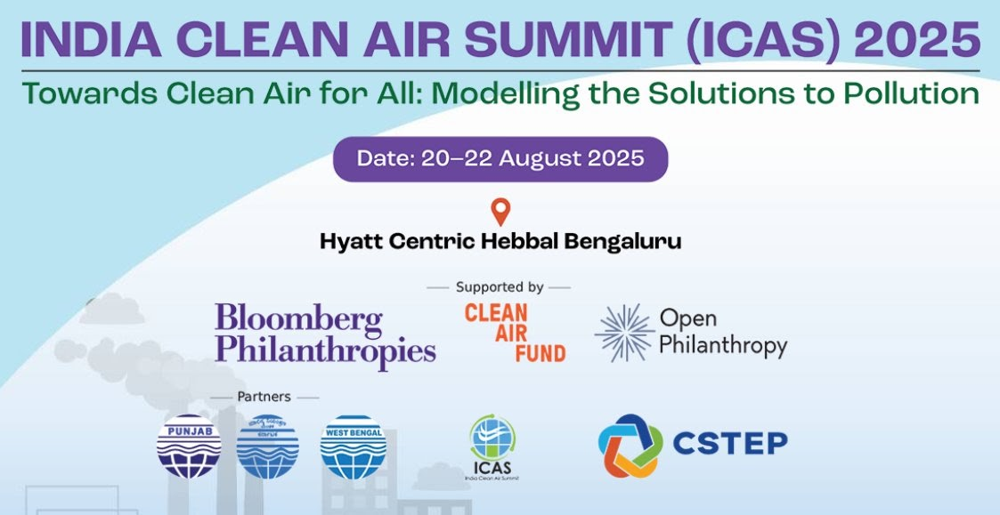
Organized by CSTEP, Bengaluru.
Vats, P., Singh, A.P., and Patel, S. (2025) “Evaluating CNN-LSTM and GNN-GRU Hybrid Models for Enhanced Air Quality Prediction and Dynamic Forecasting”, India Clean Air Summit 2025, Bengaluru, India.
Singh, A.P., Vats, P., and Jain, M.K. (2025) “ML Model Evaluation for AQI Prediction in Gangetic Plain Using Air Quality and Meteorological Features”, India Clean Air Summit 2025, Bengaluru, India.
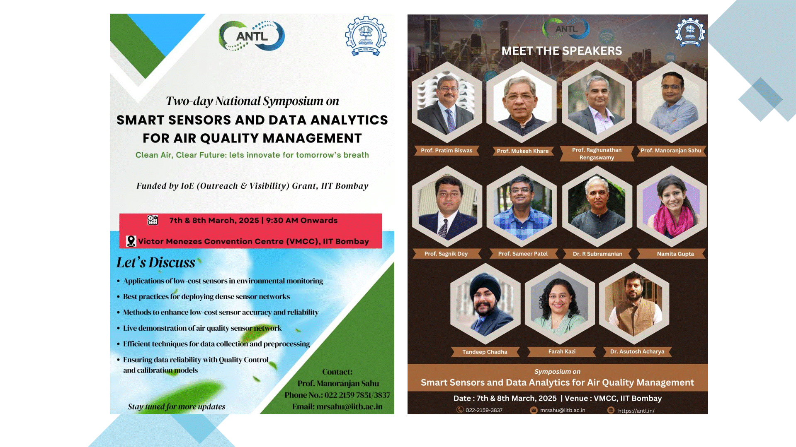
Organized by IIT Bombay.
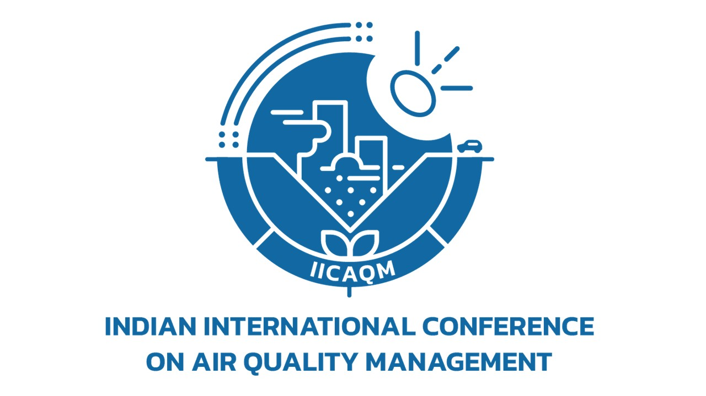
Organized by IISc, Bengaluru.
Dhada, I., Vats, P., Singh, B. (2025). Probable Health Risk of Pollutants and Noise Found Inside Bottling Beverage Plant of Himachal Pradesh, India. In: Shiva Nagendra, S.M., Ramamurthy, P.C., Vardoulakis, S., Tantrakarnapa, K., Ball, R.J. (eds) Select Proceedings of the 8th Indian International Conference on Air Quality Management (IICAQM 2023). IICAQM 2023. Lecture Notes in Civil Engineering, vol 582. Springer, Singapore.
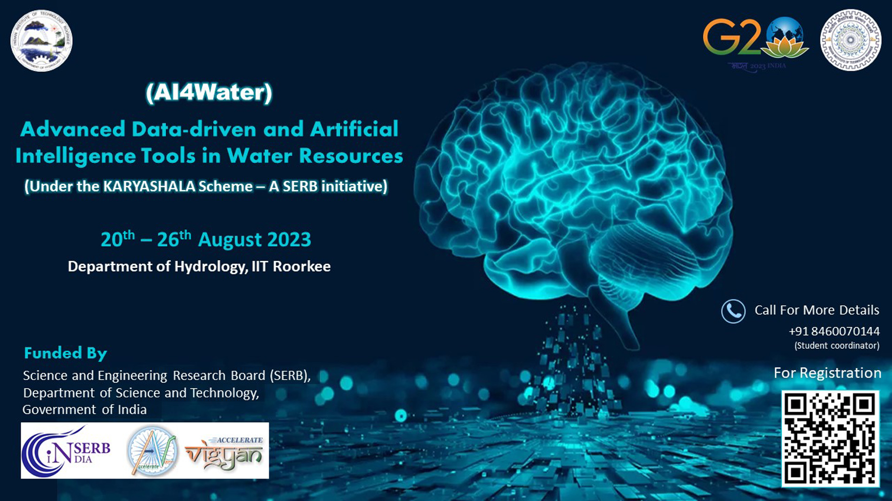
Organized by IIT Roorkee.
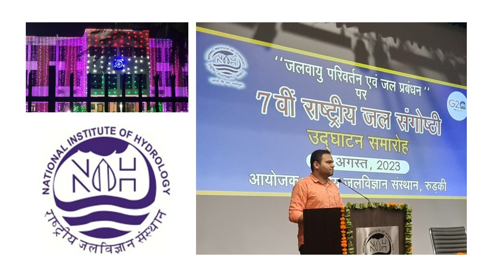
Organized by National Institute of Hydrology, Roorkee.